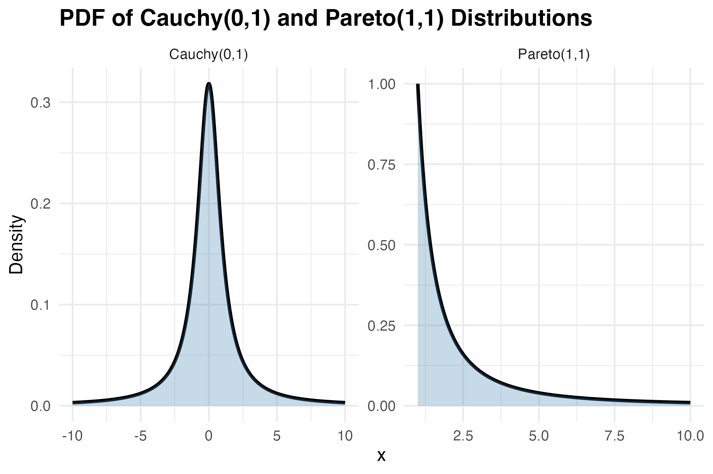

I had so much fun creating this post on sampling distributions last week that I decided to do another post that uses simulations in R to illustrate core statistical concepts. This time I thought I'd focus on the central limit theorem.
The central limit theorem is another one of those concepts taught in introductory stats courses. The theorem states that when you take the average of a large enough pool of independent samples from any distribution (with finite variance), that average will follow a normal distribution, regardless of what the original distribution looked like. This is extremely useful for conducting inferential statistics because it means that even if you're sampling from a wildly skewed or unusual distribution, the sampling distribution of the mean will eventually converge to a normal distribution.
To illustrate, I generated sampling distributions for three different types of non-normal distributions: a uniform distribution, a skewed one, and a bimodal one. For each sample size (shown as rows in the figure below), I simulated 100,000 samples, for each one taking the mean.

However, as the sample size increases (as you move down the rows), all three distributions eventually start to look like the classic bell curve. This is the central limit theorem at work. As you take the average across larger and larger samples, the sample mean will converge toward normality regardless (well, almost regardless) of the underlying distribution that generated each value within the sample.
When Does the Central Limit Theorem Fail?
It's at this point that most introductory stats courses stop. But as it turns out, there are limits to the central limit theorem. I alluded to one of the main assumptions of the theorem at the top of the post — the assumption that the variance of the underlying distribution must be finite. If this assumption isn't met, the theorem doesn't hold.
So what does it mean for a distribution to have finite variance? In simple terms, it means that the variance is a specific, calculable number. Let's consider a normal distribution as an example. If you repeatedly generate 1 million random values from a standard normal distribution and take the variance each time, your result will always be almost exactly 1. So the variance of a normal distribution converges to a single value.
This is not true for all distributions. A classic example is the Cauchy distribution, which is a special case of Student's t distribution with only one degree of freedom. The left panel of the figure below shows the probability density function of the Cauchy distribution. At first glance, it looks deceptively like a normal distribution. It has a bell-like shape with a peak in the middle, but its tails are much "heavier" than a normal distribution, which means that extreme values occur far more frequently.

The Pareto distribution also has non-finite variance under certain circumstances (specifically, when its shape parameter is less than 2). This distribution, like the Cauchy distribution, allocates non-trivial density to extremely high values.
So why doesn't the central limit theorem apply in these cases? Take a look at the figure below and see what happens to the distribution of the sample mean as the sample size increases. No matter how large the sample, these distributions never converge to normality.
So...Who Cares?
So apart from being interesting to stats nerds like me, why does this matter? How often do real-world phenomena follow Cauchy or heavy-tailed Pareto distributions? They're actually not that rare. Financial returns, especially during market crashes, can exhibit extreme outliers that make variance calculations unstable. Network latencies in distributed systems can have heavy tails due to occasional catastrophic delays. Even insurance claims can follow heavy-tailed distributions where a few massive payouts dwarf all others. In these situations, blindly applying statistical methods that assume the central limit theorem holds can lead to inaccurate conclusions. So when your data might contain extreme outliers, it's worth checking whether those outliers are just rare events from a well-behaved distribution, or signs that you're dealing with a heavy-tailed monster where traditional statistics break down.
This post was inspired by this video from my favourite maths youtuber (everyone has a favourite maths youtuber, right?).